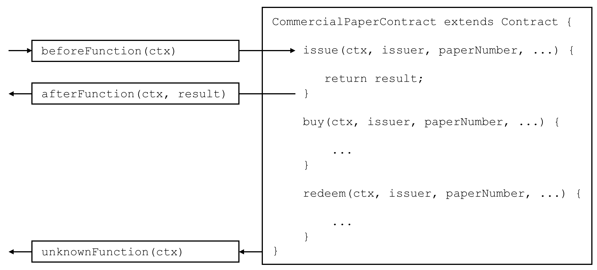

Transaction handlers¶
Audience: Architects, Application and smart contract developers
Transaction handlers allow smart contract developers to define common processing at key points during the interaction between an application and a smart contract. Transaction handlers are optional but, if defined, they will receive control before or after every transaction in a smart contract is invoked. There is also a specific handler which receives control when a request is made to invoke a transaction not defined in a smart contract.
Here’s an example of transaction handlers for the commercial paper smart contract sample:
develop.transactionhandler
Before, After and Unknown transaction handlers. In this example,
BeforeFunction() is called before the issue, buy and redeem
transactions. AfterFunction() is called after the issue, buy and
redeem transactions. UnknownFunction() is only called if a request is made
to invoke a transaction not defined in the smart contract. (The diagram is
simplified by not repeating BeforeFunction and AfterFunction boxes for each
transaction.
Types of handler¶
There are three types of transaction handlers which cover different aspects of the interaction between an application and a smart contract:
- Before handler: is called before every smart contract transaction is
invoked. The handler will usually modify the transaction context to be used
by the transaction. The handler has access to the full range of Fabric APIs;
for example, it can issue
getState()andputState(). - After handler: is called after every smart contract transaction is invoked. The handler will usually perform post-processing common to all transactions, and also has full access to the Fabric APIs.
- Unknown handler: is called if an attempt is made to invoke a transaction that is not defined in a smart contract. Typically, the handler will record the failure for subsequent processing by an administrator. The handler has full access to the Fabric APIs.
Defining a handler¶
Transaction handlers are added to the smart contract as methods with well defined names. Here’s an example which adds a handler of each type:
CommercialPaperContract extends Contract {
...
async beforeTransaction(ctx) {
// Write the transaction ID as an informational to the console
console.info(ctx.stub.getTxID());
};
async afterTransaction(ctx, result) {
// This handler interacts with the ledger
ctx.stub.cpList.putState(...);
};
async unknownTransaction(ctx) {
// This handler throws an exception
throw new Error('Unknown transaction function');
};
}
The form of a transaction handler definition is the similar for all handler
types, but notice how the afterTransaction(ctx, result) also receives any
result returned by the transaction.
Handler processing¶
Once a handler has been added to the smart contract, it can be invoked during
transaction processing. During processing, the handler receives ctx, the
transaction context, performs some processing, and
returns control as it completes. Processing continues as follows:
- Before handler: If the handler completes successfully, the transaction is called with the updated context. If the handler throws an exception, then the transaction is not called and the smart contract fails with the exception error message.
- After handler: If the handler completes successfully, then the smart contract completes as determined by the invoked transaction. If the handler throws an exception, then the transaction fails with the exception error message.
- Unknown handler: The handler should complete by throwing an exception with the required error message. If an Unknown handler is not specified, or an exception is not thrown by it, there is sensible default processing; the smart contract will fail with an unknown transaction error message.
If the handler requires access to the function and parameters, then it is easy to do this:
async beforeTransaction(ctx) {
// Retrieve details of the transaction
let txnDetails = ctx.stub.getFunctionAndParameters();
console.info(`Calling function: ${txnDetails.fcn} `);
console.info(util.format(`Function arguments : %j ${stub.getArgs()} ``);
}
Multiple handlers¶
It is only possible to define at most one handler of each type for a smart contract. If a smart contract needs to invoke multiple functions during before, after or unknown handling, it should coordinate this from within the appropriate function.